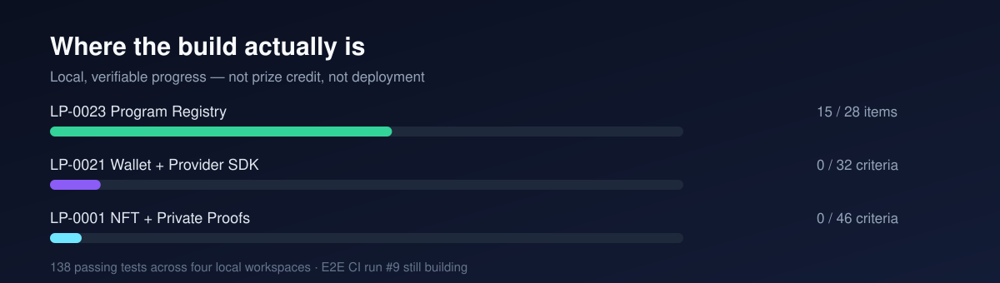

Read this first. Everything here is local or publicly verifiable. Nothing is
marked complete unless its check actually passes. “Local scaffolding” gives zero prize
credit. Deploy, testnet submission and any solution PR are on hold by explicit decision.
Build status
Last updated 2026-11-20. Numbers come from proclaim-labs and the public CI runs — re-run the commands yourself rather than trusting this page.

Ranked by completion
| Prize | Money | Formal completion | One-line truth |
|---|---|---|---|
| LP-0023 Program Registry | $2,000 | 15 / 28 items | Product built and published; blocked on one CI run, then 7 adoption items. |
| LP-0021 Wallet + Provider SDK | $20,000 | 0 / 32 criteria | Secure core + provider client built locally; the actual wallet is not. |
| LP-0001 NFT + Private Proofs | $5,000 | 0 / 46 criteria | Proof statement designed; the mock is explicitly not a zero-knowledge proof. |
What is actually built and verified
| Workspace | Tests | What it really is |
|---|---|---|
lp0001-phase0 | 44 pass | Test fixture locking down the private-transfer statement. Mock backend — not ZK, no privacy claim. |
lp0021-permissions | 23 pass | Deny-by-default, individually revocable consent store. Zero dependencies. |
lp0021-phase0 | 20 pass | Wallet secure core, encrypted keystore abstraction, approval state machine. |
lp0021-phase1 | 51 pass | Local ledger replay, balances, approval-gated send/receive, restart reconstruction. |
138 passing tests total. Every workspace is clean under
cargo fmt --check and cargo clippy --all-targets -- -D warnings, scanned for secrets,
and dual-licensed MIT AND Apache-2.0. Re-run from the labs repo.
CI
Public run #9 (44675296239) on commit 955c4c1:
Rust pass JS pass
E2E with a real standalone sequencer in progress.
Each failed run reached one step further; the current fix pins the RISC Zero guest
toolchain to 1.97.0 (1.94.1 could not link __atomic_store_1).
Hard blockers
- Testnet 0.4 — no live endpoint or stable release (roadmap target 30 Nov 2026).
- Real users — adoption needs independent humans with genuine account histories. Cannot be manufactured.
- Basecamp / deploy — on hold by explicit decision.
What's next
- Finish the E2E CI job (run #9 failed at a missing
docker/dir; fixed in29da69c, run #10 running). If green, finalize the LP-0023 solution draft — still no PR. - LP-0021 Phase 2: the local
testimonial_storemodel is built and verified (50 tests); next are token/private-account adapters and the on-chain program when 0.4 exists. - Publish starter kits and keep this page honest as adoption accrues — never invent it.
Public repositories
- proclaim — the registry product and CI.
- proclaim-labs — verified local workspaces and planning docs.
- proclaim-module-starter — template for third-party integrations.